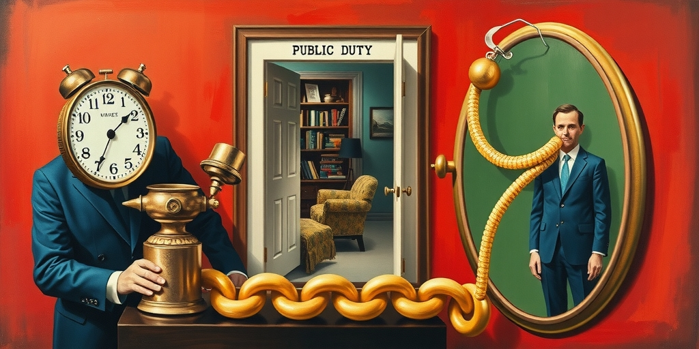
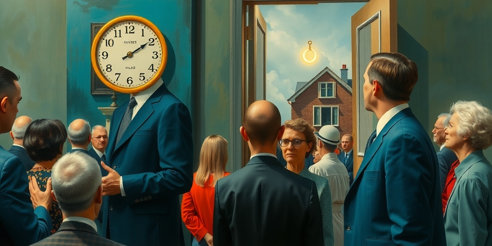

小汪老师的成长洞察 · 属于你的成长专栏
一个在暴雨里彻夜救灾、声音嘶哑的女村支书，因为戴了一对金色耳环，就被推到了舆论审判席上。她忙不迭地拿出证据，证明耳环是网购的、不到一百块。然后，风向逆转，她成了好干部。整个过程里，没有人在乎她的救灾工作到底做得怎么样。
我们质疑的，从来不是她的工作能力。我们质疑的是，她作为一个公职人员，有没有资格在外观上“看起来过得不错”。我们把“符号是否符合穷人形象”，当成了衡量她道德水平的唯一标尺。这是一种危险的认知捷径。

现代社会对公职人员的监督，本应聚焦于硬核的行为：决策是否科学、资源分配是否公平、是否存在渎职或利益输送。这些问题复杂、专业，需要信息和推理能力。大多数网民，包括你我，并不具备条件对这些进行准确判断。
于是，监督悄悄地换了一种方式。我们退而求其次，开始用“外观符号是否符合应有形象”来替代“行为是否符合职责要求”。耳环贵不贵、衣服是什么牌子、用的手机是不是最新款、吃饭去了什么餐厅……这些简单、直观、无需思考的信息，成了道德代理指标。
我们用这些符号，去代理我们本该进行的复杂判断。这本质上，是一种监督能力的系统性退化。我们不再关心他做了什么，只关心他看起来像什么。参考一种普遍的社会观察：对强权的精准感知往往优于对人性的体察，在这里，对符号的敏感也同样压倒了对事实的探究。

这种用符号代替行为的审判逻辑，制造了至少三个恶果。第一，它教会了公职人员管理符号，而不是管理行为。只要“看起来够穷”、“足够朴素”，就能规避大部分的舆论风险。于是，表演廉洁，比真正廉洁变得更重要、更安全。
第二，它制造了一个“自证清白”的荒谬陷阱。向金元需要拿出耳环给记者拍照，来证明自己没问题。试想，如果她拿出来的耳环价值200元呢？300元呢？这条“廉洁线”划在哪里？谁有权划定？这个过程本身就是对个人尊严的侵蚀，也是对公共议题的扭曲。
第三个后果，也是最严重的后果：它消耗了真正的监督资源。在石门县的这次救灾中，本该被严肃讨论和追问的是什么？是本地的防灾预案是否到位？应急物资的调度是否及时高效？村民转移过程中有无疏漏？后续的安置工作如何安排？
这些关乎公共安全与治理效能的核心问题，才是真正需要媒体聚焦、民众关注、制度回应的监督重点。然而，所有人的注意力，都被一对耳环牢牢吸走了。一次本可推动改进的公共讨论，变成了一场关于消费符号的道德审判。参考那篇关于投资心理的文章里提到的两种投资者，一种被市场噪音裹挟，一种专注本质；在公共监督里，我们同样沦为前者，被最刺眼的符号牵着走，彻底迷失了方向。
用“清贫”来证明“清廉”，并非互联网时代的新发明。它根植于中国深远的传统道德叙事之中。包拯的黑脸、海瑞的布衣蔬食、于谦的“两袖清风”，廉洁的官员形象，总是与物质的匮乏强绑定。这种文化底色，让我们在潜意识里坚信：外观的节俭，就是道德的勋章；外观的富足，就是道德的污点。
互联网时代，这套古老的逻辑被算法赋予了前所未有的传播力和杀伤力。一张照片，一个标签，一秒钟就能点燃情绪。真正需要耐心和逻辑的调查推理，流量平平；而“官员戴金耳环”这样的符号冲突，瞬间引爆全网。算法偏爱简单、极端、情绪化的符号，这恰好与我们监督能力退化的需求一拍即合。
写给你的话
这种符号审判的逻辑，真的只存在于公共监督中吗？当你评判一个同事是否靠谱，是依据他完成的工作，还是他穿着是否得体、谈吐是否“精英”？当你担心孩子是否“学坏”，是观察他的行为选择，还是紧盯他的发型和服装品牌？我们是否也在生活中，无意识地成为了自己所鄙视的“符号法官”？
小汪老师的成长洞察 · 属于你的成长专栏